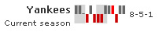
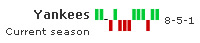
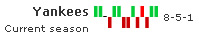

| Configurations |
Here, we'll see how to configure the various facets of the chart. We'll see how to:
Let's see each one of them in detail. |
| Specify period blocks for the chart |
FusionWidgets spark win/loss chart allows you to show period blocks on the chart using colored bands. This helps you easily interpret periods on the chart. Assuming each game occurred once a week, if we want to show 3 weeks period block on the chart, we can set: |
|
Here, we've set periodLength='3' as we've specified weekly data - so, 3 data points make 3 weeks. This will result in: |
|  |
| When specifying periods, you just need to make sure that your period length is always less than the number of data points that you've specified, as period length is directly numbered on data points. |
| Configure win, loss & draw colors |
You can configure the color for bars indicating win, loss & draw using: |
|
This will result in: |
|  |
| Configuring bar color for scoreless matches |
In the FusionWidgets Spark Win/Loss chart, along with highlighting the matches that a team won or lost, you can also indicate the matches in which one side didn’t score at all. This can be done using: |
Here, we've added the scoreless='1' attribute to the <set> element and specified red as the fill color for all matches with no scores. |
|  |
| As you can see above, there's one bar (winning bar) colored in red indicating that the other side couldn't score in that match. |
| Hiding chart value |
You can opt to hide the chart value by setting: |
|
This will result in: |